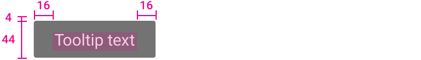
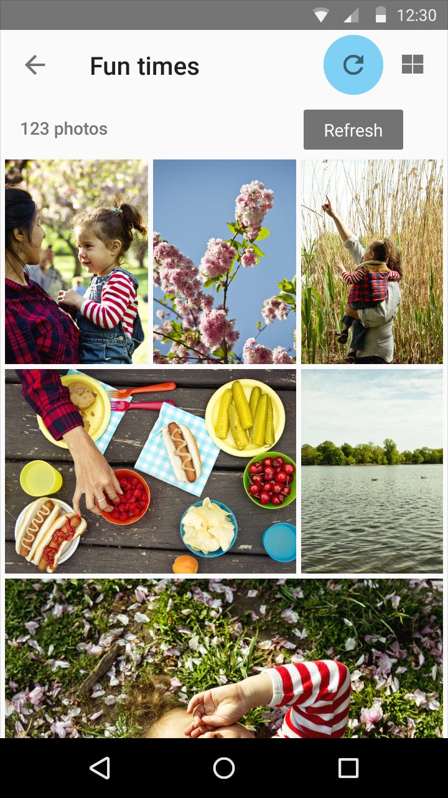
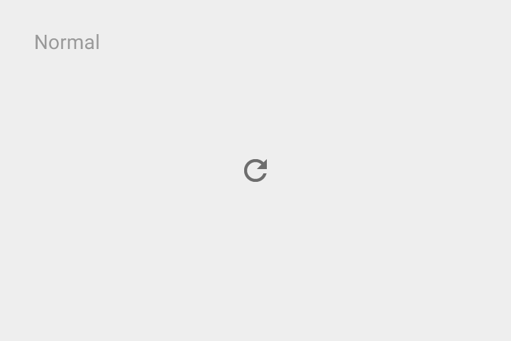
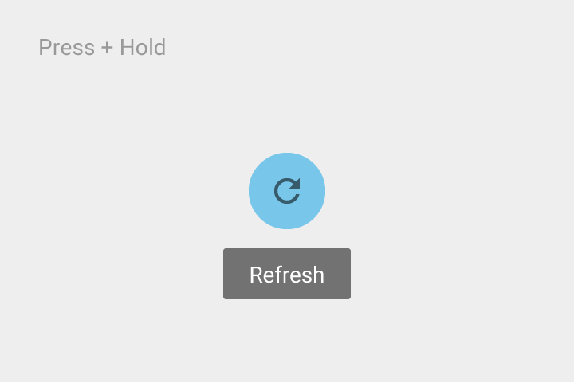

Touch UI tooltips
Text: Roboto Medium 14sp
Background fill: 90% opaque




Tooltips are labels that appear on hover and focus when the user hovers over an element with the cursor, focuses on an element using a keyboard (usually through the tab key), or, in a touch UI, upon touch (without releasing). They contain textual identification for the element in question. They may also contain brief helper text regarding the function of the element. Nothing within the label can take focus.
Use tooltips for elements that are interactive and primarily graphical (not textual).
Tooltips don’t display rich information including images and formatted text.
Tooltips are different than ALT-attributes, which are intended primarily for static images.
Tooltips don’t have directional arrows; instead, rely on motion emanating from the source to convey direction.
Text: Roboto Medium 10sp
Background fill: 90% opaque
Text: Roboto Medium 14sp
Background fill: 90% opaque
Sun Junwen | Casper Zhang.